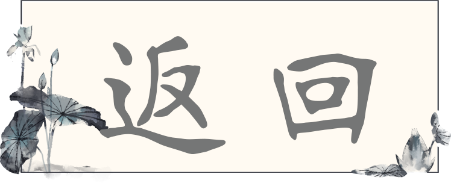

1:宋代的五大名窑为?
2:宋代五大名窑中最为珍贵的是?
3:五大名窑之说最早出现于哪本文献?
4:南宋官窑在宋时位于?
5:“紫口铁足”所指的是南宋官窑瓷器具有的什么特点?
6:宋高宗在杭州所立的新窑名为?
7:“皇城东南临江渚，山名乌龟含异土”指的是南宋官窑的哪一步制作工艺?
8:“踩得脚下似黏胶，日渐西斜不停鞭”指的是南宋官窑的哪一步制作工艺?
9:“再将坯件细修整,剔除疵点与暇纹”指的是南宋官窑的哪一步制作工艺?
10:中国第一座以遗址为基础建立的陶瓷专题博物馆是?
11:宋朝由民间专门为皇帝烧制的瓷器叫?
12:“官窑瓷宋修内司烧者土脉细润，色青带粉红，浓淡不一，有蟹爪纹 紫口铁足”出自?
13:明成化斗彩鸡缸杯是成化皇帝朱见深专门为谁烧制的?
14:创造了2010年全球范围内中国艺术品交易最高价的中国瓷器文物是?
15:下列哪一件艺术品于2011年在中国嘉德春拍现场以4.255亿人民币拍出?
答题完成
